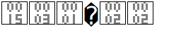

<!DOCTYPE html>
<html lang="en">
  <head>
    <title>Oscar Macdonald Portfolio</title>
    <meta name="viewport" content="width=device-width, initial-scale=1">
    <link rel="stylesheet" href="https://maxcdn.bootstrapcdn.com/bootstrap/3.3.7/css/bootstrap.min.css">
    <script src="https://ajax.googleapis.com/ajax/libs/jquery/3.2.0/jquery.min.js"></script>
    <script src="https://maxcdn.bootstrapcdn.com/bootstrap/3.3.7/js/bootstrap.min.js"></script>
    <script src="main.js"></script>
    <link rel="stylesheet" href="main.css">
  </head>
  <body data-spy="scroll" data-target=".navbar" data-offset="50">
    <div class="jumbotron">
      <div class="container text-center">
        <h1>Oscar Macdonald</h1>
        <p>Bachelor Degree of Information Technology; Otago Polytechnic, 2017</p>
      </div>
    </div>
    <nav class="navbar navbar-inverse" data-spy="affix" data-offset-top="170">
      <div class="container-fluid">
        <div class="navbar-header">
          <button type="button" class="navbar-toggle" data-toggle="collapse" data-target="#myNavbar">
          <span class="icon-bar"></span>
          <span class="icon-bar"></span>
          <span class="icon-bar"></span>                        
          </button>
          <a class="navbar-brand" href="#">macdo5.github.io</a>
        </div>
        <div>
          <div class="collapse navbar-collapse" id="myNavbar">
            <ul class="nav navbar-nav">
              <li><a href="#DunedinIoT">DunedinIoT</a></li>
              <li><a href="#Android">Android</a></li>
              <li><a href="#Linux">Linux</a></li>
              <li class="dropdown">
                <a class="dropdown-toggle" data-toggle="dropdown" href="#">Languages<span class="caret"></span></a>
                <ul class="dropdown-menu">
                  <li><a href="#Languages">Java</a></li>
                  <li><a href="#Languages">JavaScript</a></li>
                  <li><a href="#Languages">C++</a></li>
                  <li><a href="#Languages">C#</a></li>
                  <li><a href="#Languages">Ruby</a></li>
                  <li><a href="#Languages">Python</a></li>
                  <li><a href="#Languages">SQL</a></li>
				  <li><a href="#Languages">Node.js</a></li>
                </ul>
              </li>
              <li><a href="#Bachelor">Education</a></li>
              <li><a href="#AboutOscar">Who is Oscar?</a></li>
			  <li><a href="#PersonalPortfolio">DunedinIoT Personal Portfolio</a></li>
            </ul>
          </div>
        </div>
      </div>
    </nav>
	<div class="container">
		<div id="DunedinIoT" class="container-fluid section">
		  <h1>DunedinIoT Project</h1>
		  <p>The DunedinIoT Project (previously known as The Things Network Project) is the introduction of an open, free and community-owned IoT data network for Dunedin.</p>
		  <p>With a team of staff and students collaborating together, our goal is to deploy IoT devices linked to LoRa gateways kilometers away, managed by our own local servers</p>
		  <p>This will provide locals with the opportunity to collect data with a small, cheap sensor usinmg our free network. At the same time, both staff and students get to learn and apply our skills, the perfect win-win!</p>
			<p>For more information, <a href="http://otagopolytechnic.github.io/ThingsNetworkDunedin/" target="_blank">click here</a> to visit our GitHub page</p>
		</div>
		<div id="Android" class="container-fluid section">
		  <h1>Android Mobile App Development</h1>
		  <p>Portable, handheld devices are becoming renowned for their use in education, as well as beneficial for quick notifications and control over the IoT. Plus the games are really fun!</p> 
		  <p>My focus is for powerful, simple and user-friendly apps with documented, Object-Oriented, SOLID design.</p>
		</div>
		<div id="Linux" class="container-fluid section">
		  <h1>Linux</h1>
		  <p>Linux is a very popular operating system for servers because of its compatability with the LAMP bundle, its advanced security and its networking capabilities.</p>
      <p>Otago Polytechnic has courses in Linux and Networking, and both of these papers were instrumental in securing my first internship at Iris Data Science in Dunedin.</p>
      <p>I was given the opportunity to exercise my problem-solving skills and to develop my knowlege of Linux even further while working at Iris Data Science with great success.</p>
		  <p></p>
		</div>
		<div id="Languages" class="container-fluid section">
		  <h1>Languages</h1>
		  <div class="row">
			<div class="col-lg-3 col-md-4 col-xs-6"></div>
			<div class="col-lg-3 col-md-4 col-xs-6"></div>
			<div class="col-lg-3 col-md-4 col-xs-6"></div>
			<div class="col-lg-3 col-md-4 col-xs-6"></div>
			<div class="col-lg-3 col-md-4 col-xs-6"></div>
			<div class="col-lg-3 col-md-4 col-xs-6"></div>
			<div class="col-lg-3 col-md-4 col-xs-6"></div>
			<div class="col-lg-3 col-md-4 col-xs-6"></div>
		  </div>
		</div>
		<div id="Bachelor" class="container-fluid section">
		  <h1>Bachelor of Information Technology(BIT)</h1>
		  <p>At Otago Polytechnic, students enroled in the BIT develop high-level technical abilities and a strong theoretical understanding of IT concepts. </p>
		  <p>Combined with skills in professional communication and practical experience, graduate are ready to work effectively in the industry.</p>
      <h3>Course Results</h3>
      <div class="table-responsive">   
        <h4>2015</h4>
        <table class="table">
          <thead>            
            <tr>
              <th>Paper Title</th>
              <th>Result</th>
            </tr>
          </thead>
          <tbody>
            <tr>
              <td>Professional Practice for Information Technology</td>
              <td>A</td>
            </tr>
            <tr>
              <td>Introduction to Systems Analysis</td>
              <td>A</td>
            </tr>
            <tr>
              <td>Programming 1</td>
              <td>A+</td>
            </tr>
            <tr>
              <td>Programming 2</td>
              <td>A+</td>
            </tr>
            <tr>
              <td>Web 1 - Technology and Development</td>
              <td>A+</td>
            </tr>
            <tr>
              <td>Introduction to Networks</td>
              <td>A+</td>
            </tr>
            <tr>
              <td>PC Maintenance</td>
              <td>A+</td>
            </tr>
            <tr>
              <td>Maths for IT</td>
              <td>A+</td>
            </tr>
          </tbody>
        </table>
      </div>
      <div class="table-responsive">
        <h4>2016</h4>
        <table class="table">
          <thead>
            <tr>
              <th>Paper Title</th>
              <th>Result</th>
            </tr>
          </thead>
          <tbody>
            <tr>
              <td>Software Engineering</td>
              <td>A</td>
            </tr>
            <tr>
              <td>Databases 2</td>
              <td>B+</td>
            </tr>
            <tr>
              <td>Programming 3</td>
              <td>A</td>
            </tr>
            <tr>
              <td>Routing and Switching Essentials</td>
              <td>A+</td>
            </tr>
            <tr>
              <td>Linux Operating Systems</td>
              <td>A-</td>
            </tr>
            <tr>
              <td>Embedded Systems</td>
              <td>A</td>
            </tr>
            <tr>
              <td>Automation and Robotics</td>
              <td>A</td>
            </tr>
            <tr>
              <td>Programming 4: Intermediate Architectures and Algorithms</td>
              <td>A+</td>
            </tr>
          </tbody>
        </table>
      </div>
      <div class="table-responsive">
        <h4>2017</h4>
        <table class="table">
          <thead>
            <tr>
              <th>Paper Title</th>
              <th>Result</th>
            </tr>
          </thead>
          <tbody>
            <tr>
              <td>Project 1</td>
              <td>TBA</td>
            </tr>
            <tr>
              <td>Project 2</td>
              <td>TBA</td>
            </tr>
            <tr>
              <td>Object Oriented Systems Development</td>
              <td>TBA</td>
            </tr>
            <tr>
              <td>Algorithms and Data Structures</td>
              <td>TBA</td>
            </tr>
            <tr>
              <td>Web 3 - Enterprise Development</td>
              <td>TBA</td>
            </tr>
            <tr>
              <td>Design and Development of Applications for Mobile Devices</td>
              <td>TBA</td>
            </tr>
            <tr>
              <td>Next Generation Networked Hardware</td>
              <td>TBA</td>
            </tr>
          </tbody>
        </table>
        </div>
		</div>
		<div id="AboutOscar" class="container-fluid section">
		  <h1>Who is Oscar?</h1>
		  <p>I enjoy the success of creating a solution to a problem. The entire process from learning and understanding the problem to implementing a solution is very satisfying.</p>
		  <p>I really enjoy nature (even if I don't get the time to experience it myself!) I take care to improve the local environment in any way I can, whether it's recycling and composting or just finding out more about sustainability.</p>
		  <p>My dream is to combine my passion for IT with my love of sustainability and self-reliance.</p>
		  <p>My partner and I have plans to build a house, even though we have no house building skills! To start, we will build small things and work our way up, enjoying the process as we go.</p>
		</div>
	    <div id="PersonalPortfolio" class="container-fluid section">
			<h1>Oscar Macdonald – IoT Dunedin Project Portfolio</h1>

			<p>The IoT Dunedin project (nee The Things Network) is an Internet of Things network using LoRa specifications to create IT solutions for people in Dunedin. LoRa stands for ‘Low Power, Long Range’ in some cases, or ‘Low Power, Wide Area Network’ (LoRaWAN)
			I first learned about The Things Network from the Otago Daily Times <a href="https://www.odt.co.nz/news/dunedin/new-network-smart-resource" target="_blank">article</a>. At the beginning of the year I chose to join The Things Network because I had taken the ‘Embedded Systems’ and ‘Automation and Robotics’ classes previously, so I believed I had the knowledge required to contribute to the project. And because the project was about device communication I thought the skills learnt in Networking would also come in handy. I had also read the project posters from the previous semester and The Things Network poster appealed as the most exciting and diverse project to me.
			I believed that the project was well established and documented; my first task would be to catch up on the documentation and understand how the project worked. After talking with Dan Williamson, a member of The Things Network from 2016, it turned out that the documentation didn’t exist and that all previous work from the past year and a half was scrapped due to the changing LoRa specifications. So when the new group met for the first time it was decided that we would start from scratch.</p>
			<br>
			<br>
			<h2>Task 1: Project Case Study</h2>
			<p>The LoRaServer was introduced to us by Brendan Kelly, a member of the IoT Dunedin Project. He had briefly investigated different solutions to hosting a local LoRa network without relying on cloud solutions.
			Writing a case study investigating an example of how the LoRaServer was implemented would help our group decide if the LoRaServer would suit our needs or not.
			After giving an open invitation for interviews on the <a href="https://gitter.im/loraserver/loraserver" target="_blank">gitter page</a> for loraserver. I began talking with Lederer, G. about his personal experience with the loraserver technology. His experience was used to create a case study reflecting loraserver usage with a focus on scalability of the loraserver technology. It was difficult to define an exact version of the technology because at the time of writing the loraserver was updated to version 0.15.0, and Lederer may have been using a different version as well.</p>
			<br>
			<h2>Task 2: Research of LoRaServer</h2>
			<p>Before setting up the loraserver, it was important to research as much about the loraserver itself before developing a full loraserver, so we would have a better understanding of the technology and whether it suited the Project.
			The webpage <a href="https://docs.loraserver.io" target="_blank">https://docs.loraserver.io</a> is the official documentation site for loraserver. It contains information about the architecture, the nodes that collect the data, and a brief summary of the role of any application that is used to access data on the network.
			The first step was to confirm that we could support the requirements. Most of the instructions to set up the server required a linux distribution and shell commands, so we knew that the server would have to be deployed on a Linux machine. We chose Ubuntu because students who have taken the Linux paper in Otago Polytechnic learn using Ubuntu machines.
			Because this architecture is a network of devices communicating with each other, it was important that there were no firewalls blocking certain ports between devices, and that we could assign fixed IP addresses to our devices. Fortunately the local network used for our development gave us the opportunity to use fixed addresses and there were no firewalls blocking ports between devices.</p>
			<br>
			<h2>Task 3: Setup of LoRaServer</h2>
			<p>The initial attempt at creating a host for the LoRaServer was performed using an Ubuntu virtual machine and following the instructions on the <a href="https://www.loraserver.io/" target="_blank">official website</a>. It was soon decided that a VM wouldn’t be suitable for testing because other people would want direct access to the server, and the VM wouldn’t be able to handle some of the port and network requirements.
			A new host was setup on a physical machine. The loraserver package was installed and setup, but then we realised that two separate packages also needed to be installed, along with third party packages such as PostgreSQL and mosquito.
			Once all appropriate packages were installed, we turned our focus more to the gateway rather than the server.</p>
			<p>At some point, I decided to update the software on the server using the resgular Ubuntu commands <code>sudo apt-get update</code> and <code>sudo apt-get upgrade</code>. This caused the LoRaServer to update to the latest version and navigating to the unsecure web page (http rather than https) for the lora-app-server responded with a ‘yet-to-be identified’ image.</p>
			<br>
			<p>I uninstalled the loraserver packages and started again following the same pattern I used to install the packages on the same device earlier in the semester. After installation, the web page was still responding with the same image. I was close to reinstalling the entire operating system when I noticed in the instructions in the official LoRaServer documentation said to navigate to the secure wep page (https). This solved the issue and no reinstall was required.</p>
			<p>When the software was updated, a new database was required for the loraserver, as well as the lora-app-server. After creating a new database with a unique roll and password for the loraserver, the loraserver was unable to start. After looking through the documentation, talking to various people on https://gitter.im/loraserver/loraserver and changing various settings, I finally uninstalled the operating system, formatted the hard drive and started from the beginning. I used the default role name for both databases and this time there were no errors.</p>
			<p>At this point, a working example of the instructions to install all required packages for loraserver can be found <a href="https://github.com/OtagoPolytechnic/ThingsNetworkDunedin/blob/gh-pages/LoRa%20Server%20Documentation/LoraserverSetupSteps.md" target="_blank">here</a>.</p>
			<br>
			<h2>Task 4: SSH access and Server backups</h2>
			<p>I had previously learned how to access Linux machines using SSH in a secure fashion, and I applied the same process to the loraserver. Users require a public-private keypair to access the server remotely as well as a password when logging in. Keypairs can be obtained from the systems administrator on request.
			With help from Zoe, we created a simple database backup for all related databases.
			Here is an example of the database dump</p>

			<code>sudo pg_dump –U loraserver_ns –W –h 127.0.0.1 loraserver_ns > ~/backup_loraserver</code>
		</div>
	</div>
	<footer class="container-fluid text-center">
	  <p>Made using HTML, CSS and JS with Bootstrap framework. Hosted using GitHub pages and Jekyll.</p>
	</footer>
  </body>
</html>